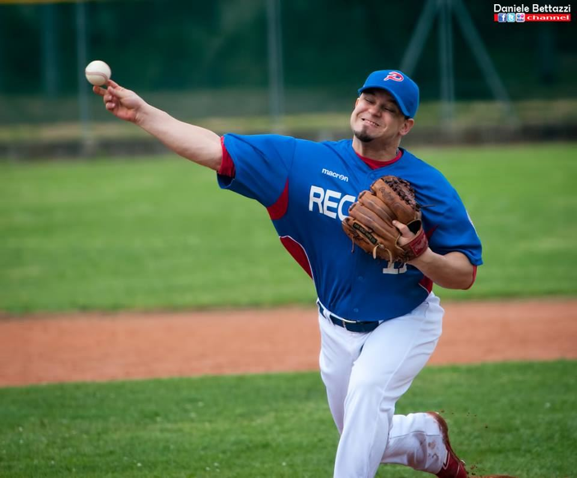
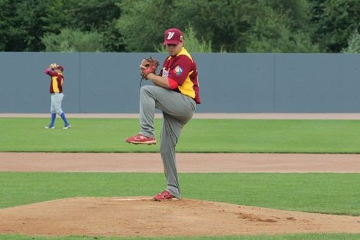

Sono diverse settimane che il mercato dei Lancers Lastra a Signa è nella sua piena attività, di fatto il Direttore Sportivo Ciappi si sta adoperando su più fronti per allestire il miglior roster possibile per la prossima stagione.
Il lavoro svolto per portare a Lastra a Signa due tecnici di spessore come Rosellini e Barbieri non poteva restare fine a se stesso, nonostante gli stessi tecnici abbiano espresso giudizi più che positivi sulla rosa che ha concluso la stagione 2017.
C’era da fare però i conti con un monte di lancio piuttosto corto considerate le partenze di Bosi e Vannini, l’obiettivo principale pertanto era quello di trovare un partente affidabile e di qualità.
Dopo svariati contatti si è raggiunto l’accordo con il pitcher italo-venezuelano Alejandro Morese, lanciatore di 33 anni con forte esperienza nel baseball italiano.

Lo stesso Morese, nonostante le offerte giunte da altre squadre, ha scelto i Lancers proprio in virtù dell’ottimo lavoro svolto negli ultimi anni dal team lastrigiano.
Alejandro è un pitcher destro arrivato in Italia nel 2004 per giocare in massima serie a Nettuno, l’anno successivo è approdato a Firenze in Serie A2, lì ha trovato maggiore continuità lanciando per oltre 137 riprese a fronte di 9 vittorie.
Dal suo arrivo in Italia Morese si è avvicendato tra IBL, Serie A2 e Serie A passando per Nettuno (IBL), Firenze (A2), Modena (A2), Novara (A-IBL), Foggia (A) e Padule Sesto Fiorentino (A); nel 2016, ultimo anno in Italia, ha giocato a Parma, sponda Crocetta, lanciando ben 86 inning e vincendo 7 incontri.
Nella scorsa stagione, Alejandro, ha scelto di giocare in Inghilterra per i Southampton Mustangs nella National Baseball League, lì ha chiuso con una media di 2.64 e 6 vittorie.

Prima di arrivare sulla nostra penisola ha giocato un breve periodo con gli Aguilas del Zulia in Venezuela, poi il passaggio in Alabama per giocare con la Faulkner University ed infine la Lega Canadese con i London Monarchs.
Morese si unirà al resto della squadra a Marzo; un’altra pedina di spessore va ad unirsi al roster dei Lancers, lo staff tecnico resta ben saldo con i piedi per terra e in più occasioni ha dichiarato che l’obiettivo sarà migliorare l’aspetto tecnico e mentale della squadra, questo poi dovrà portare a dei risultati che speriamo possano essere sempre più vincenti.
Con l’occasione ci teniamo a ringraziare il presidente Simone Pillisio che ha reso possibile e agevole la transazione.
La squadra è in piena preparazione atletica, si prospetta un anno molto competitivo sotto molti punti di vista, infatti i nuovi tecnici valuteranno i giocatori in base al lavoro svolto in questi mesi e da qui in avanti.
I numeri di Alejandro:
Nettuno IBL 2004
Fiorentina A2 2005
Fiorentina A2 2006
Modena A2 2008
Modena 2009
Novara A 2010
Novara IBL 2011
Novara IBL2012
Foggia A 2014
Padule A2015
Crocetta B 2016
Southampton Mustangs 2017